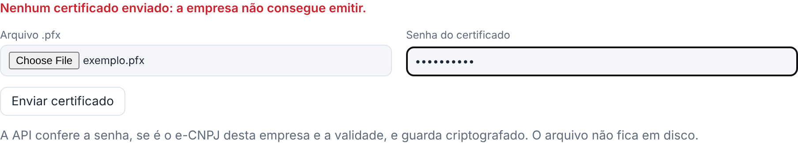
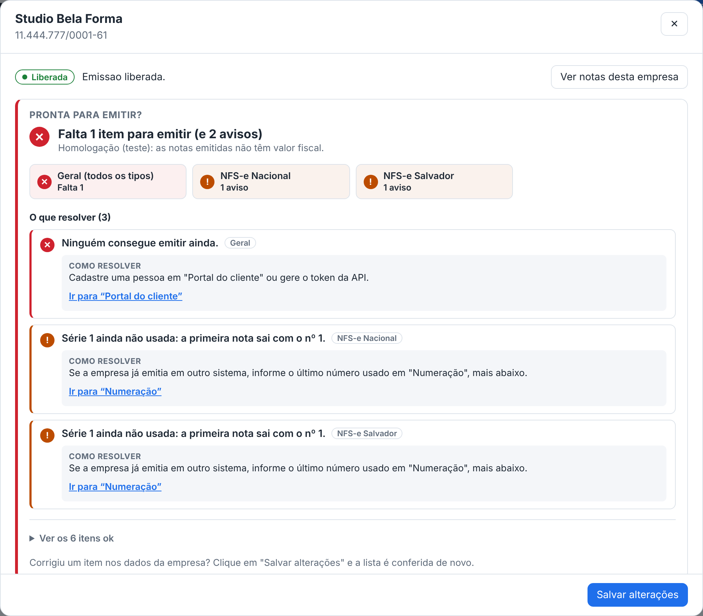

Certificado e "pronta para emitir"
Envie o certificado A1 da empresa e use o quadro "Pronta para emitir?" para não esquecer nada.
checklist Antes de começar
- Peça ao cliente o arquivo do certificado A1 (
.pfxou.p12) e a senha dele. - Tem que ser o e-CNPJ da própria empresa e estar dentro da validade.
- O arquivo não fica salvo no servidor: o sistema guarda criptografado no banco.
-
Abra a ficha da empresa
Na lista do painel, clique na linha da empresa.
-
Envie o certificado
No bloco Certificado digital, escolha o arquivo
.pfx, digite a senha do certificado e clique em Enviar certificado.
-
Confira se foi aceito
Aparece em verde o titular e a validade. A coluna Certificado da lista mostra a data de vencimento.

-
Resolva o resto do "Pronta para emitir?"
O quadro no topo da ficha se atualiza. ✕ Falta impede a emissão; ! Atenção é aviso. Clique em Ir para em cada item e resolva. Os itens que já estão certos ficam em Ver os itens ok.

Itens mais comuns do quadro
| Item | Como resolver |
|---|---|
| Sem certificado digital. | Envie o .pfx (passo 2). |
| Ninguém consegue emitir ainda. | Dê acesso ao portal para alguém da empresa (Acesso ao portal) ou gere o token da API. |
| Série 1 ainda não usada: a primeira nota sai com o nº 1. | Só um aviso. Se a empresa já emitia em outro sistema, informe o último número usado em Numeração. |
| Sem inscrição municipal / UF / inscrição estadual. | Preencha nos dados da empresa e clique em Salvar alterações. |
Se der errado
| O que aconteceu | O que fazer |
|---|---|
| "Senha incorreta ou o arquivo não é um certificado A1". | Confira a senha com o cliente (maiúsculas contam) e se o arquivo é .pfx/.p12. |
| "Este certificado é do CNPJ ..., que não é desta empresa". | O cliente mandou o certificado de outra empresa. Peça o certo. |
| "Certificado vencido". | O cliente precisa renovar o certificado com a certificadora e mandar o novo. |
| O certificado está para vencer. | Peça o novo com antecedência. Quando chegar, é só enviar de novo: o novo substitui o antigo. |
← Voltar para a Central de Ajuda
Última revisão: 07/11/2026